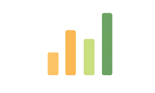

Gera impacto real.
Você ajuda diretamente famílias em situação de vulnerabilidade alimentar.
Use seu tempo e sua energia para transformar vidas e ainda acumule recompensas exclusivas.
Quero ser voluntário
O voluntário é uma pessoa que ajuda a transportar doações entre os pontos de coleta, doadores e famílias beneficiárias.
No Mesa Solidária, além de entregar alimentos, o voluntário também pode doar alimentos do próprio bolso sempre que desejar.

Você ajuda diretamente famílias em situação de vulnerabilidade alimentar.
Conecte-se com doadores, empresas parceiras e outros voluntários.
Você escolhe quando, como e onde quer ajudar.
Preencha nome, endereço e dados básicos.
RG, comprovante de endereço e antecedentes para segurança de todos.
Um vídeo rápido com regras de conduta, higiene e segurança.
Veja entregas disponíveis ou pontos com alimentos para retirar.

Troque seus pontos por ingressos culturais, musicais e esportivos.

Descontos em mercados, restaurantes, farmácias e lojas parceiras.
Ideal para estudantes receba horas validadas com certificado digital.

Ganhe medalhas digitais e suba no ranking de impacto.

Veja quantas famílias você ajudou e quantos kg de alimentos entregou.